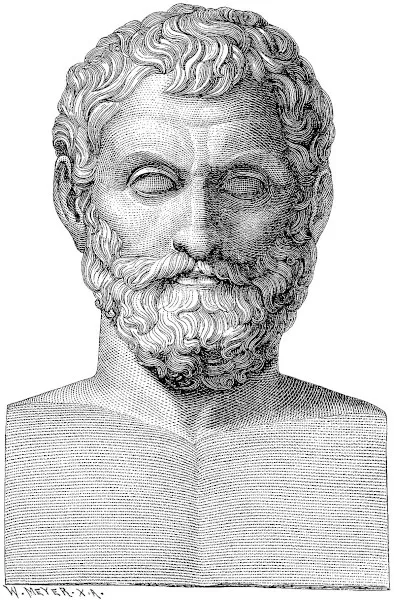

Tales de Mileto (624-546 a.C.)foi um filósofo, matemático e astrônomo antigo. A ele é atribuída a criação da Filosofia.
Tales de Mileto é considerado o primeiro filóso de tradição ocidental. Assim como os outros pensadores do período pré-socrático, Tales buscava compreender qual é a verdadeira origem do Universo, refutando a mitologia grega, que apresentava narrativas originárias que explicavam de maneira fantasios o modo como o Universo tinha sido formado.
Experiência Profissional
- Astrônomo
- Matemático
- Engenheiro
- Comerciante da Grécia Antiga
Habilidades e Especialidades
- Inteligente
- Curioso
- Pensador
- Matemático